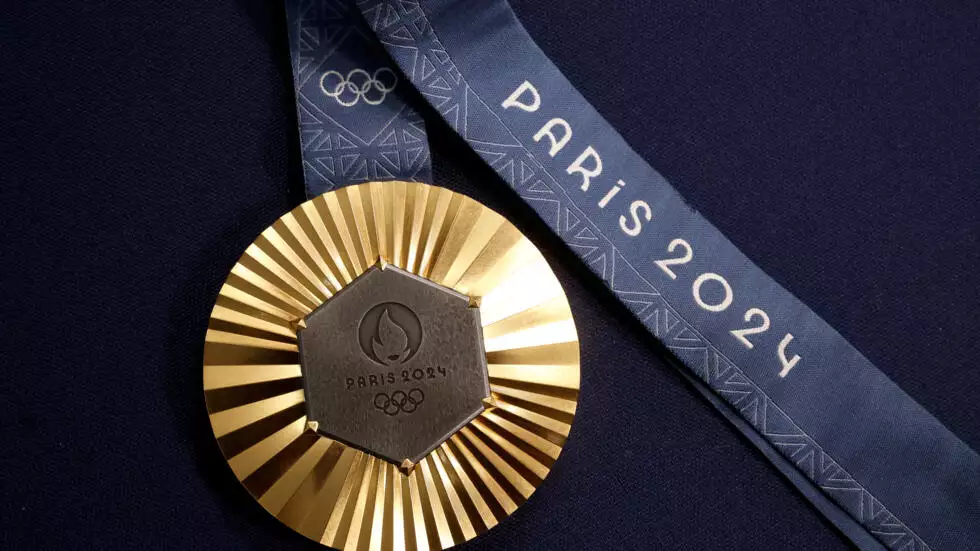
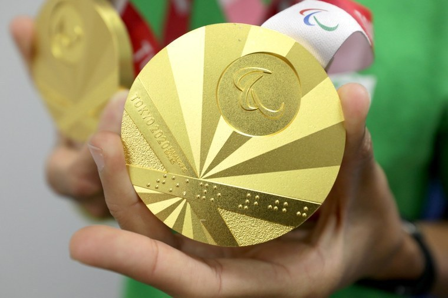
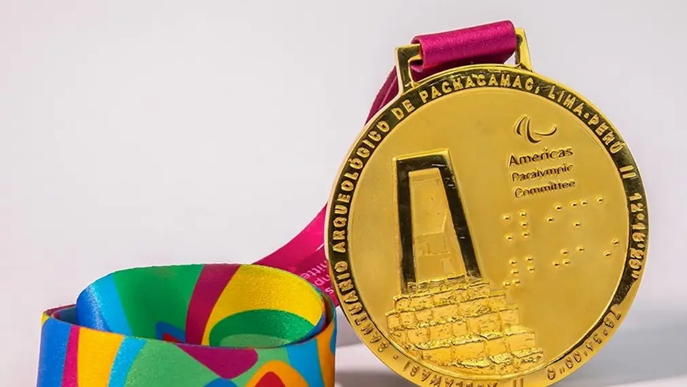

Home
Sobre
Destaques
Desafios
Medalhas
Contato

Ouro - Jogos Paralímpicos Paris 2024 (100m Costas S2)
Ouro - Jogos Paralímpicos Paris 2024 (50m Costas S2)
Ouro - Jogos Paralímpicos Paris 2024 (200m Livres S2)

Ouro - Jogos Paralímpicos de Tóquio 2020 (200m Livre)

Ouro - Jogos Parapan-Americanos 2019 (100m Livre S2)
Ouro - Jogos Paralímpicos de Tóquio 2020 (50m costas S2)